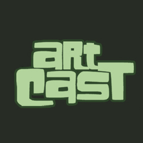
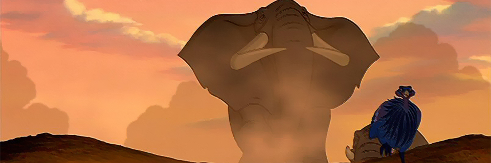
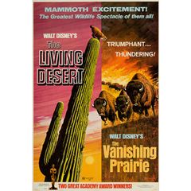
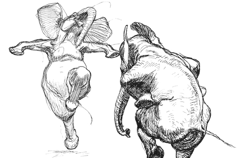
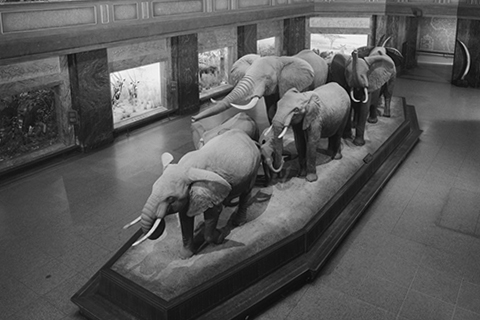

November, 2014
Reference Art (p. 2)
Dane Aleksander, animator at Animat Habitat™
This article is continued from Chapter 1: Wildlife Art. This second chapter looks at some of the influential voices and external motivations that inspired White Elephant — a comic book, a companion app and an invitation to change the way we look at wildlife.
Art Daydreams
In daydreams of a comic book in summer of 2011 at Games for Change in New York City, during a slide show where Polaroid-like graphics swiped across the screen and each photo was instead a video that played for its few frames in focus. Those two-minutes of presentation following four years of study in interactive multimedia and design (IMD) had sparked my imagination, as I began to realize a mixed medium made to showcase the best of art and story. I took note: “animated scenes within [a] comic book” and then I forgot about it. And so I had long since forgotten about that note when the story of White Elephant settled naturally in the comic book medium nearly three years later.
In that time – in the hours before and after nine-to-five at a local app studio – the early accessible voices of artists and storytellers online proved influential in keeping my big picture moving forward. Two sources that have offered actionable insights for independent artists are the Artcast by Chris Oatley and Lean into Art co-hosted by Jerzy Drozd and Rob Stenzinger. Perhaps what is most encouraging – and what is in common with both podcasts – is the dedication to sharing and teaching critical thinking about visual storytelling.

Artcast (2008) © Visual Voice
You never know when you may spark an idea in another that allows them to take the next step in pursuit of their passion. As I put headphones to my ears, the personal and art-driven audio journal of Chris Oatley’s Artcast opened my eyes to storytelling in comics.
Inspiring audio archives like these are invaluable resources for silent artists finding their creative voice. In terms of specific breakthroughs on White Elephant, I can point back to the Artcast (e/49) titled: “Projects that Pitch and the Fine Art of Finishing.” The episode just so happened to feature Jerzy Drozd — Drozd's conversation with Chris Oatley encapsulated an ever-growing passion for storytelling in comics — a theme that transcends the Artcast as well as Drozd’s many podcasts and professions (cartoonist, teacher). Any lack of personal history reading comics is fast overcome by their passion for comic books as an approachable medium for an artist looking to communicate a personal and art directed story.
Art Community
In 2013, I had an amazing opportunity to attend Creative Talent Network Expo (CTN-X) — a conference packed with inspiring artists and, not coincidentally, a keynote event for Chris Oatley's Oatley Academy who made me feel welcome all the way across the continent in Burbank, CA. It was great to actually meet Chris and company and experience their shared genuine passion for the artist community.
Another teaching artist and storyteller also at CTN-X, Ryan Woodward had released a near proof of concept for the companion app for White Elephant, unbeknownst to him, of course, and he hit this mixed medium out of the park with an app and animated graphic novel titled Bottom of the Ninth. Ryan Woodward has a uniquely expressive style of animation that is awe-inspiring in and of itself — a style that is particularly present in one of his most personal works, and one of my personal favorite animations: Thought of You. His artwork and videos describing the journey that lead to the creation of Thought of You in 2010 and then Bottom of the Ninth in 2012 have inspired and trail-blazed my passion for this project.
At CTN-X, Woodward called to attention the patterns in artistic struggle and ecstasy, and since then, I have encouraged the enjoyment of my process and experience doing what I love to do. And ya, I draw cause I like it.

The Lion King (1994) © Disney
Disney animation has at least indirectly inspired most animated pictures, and White Elephant is no exception, with frames that reference sequences from The Lion King (1994). The classic Disney films were also famous for their use of live-action as source material in drawing animals, with footage nearly always available for any animal because of the studio’s film series: True-Life Adventures. The Living Desert (1953) and The Vanishing Prairie (1954) were the first two feature films in this series and, coincidentally, were later promoted as a double-series release with a promotional cover image that shows nature in an art directed graphic style. White Elephant in part takes on a similar graphic design so that the art and the story may directed to express different bold, clear visual statements.

The Living Desert, The Vanishing Prairie (1971) © Disney
Even some artists known to have inspired Disney animation have too been referenced in the making of White Elephant, in particular the sequential photographs of animal locomotion by Eadweard Muybridge (1830-1904) as well as the drawings of Heinrich Kley (1863-1945). The former innovated the study of the motion of animals. The latter provided a unique interpretation of animals in unusual poses, and Kley's drawings also clearly had an influence on Walt Disney's “Dance of the Hours” in Fantasia (1940). In particular, Kley's dancing and skating elephants have in part informed the more complex sequences of character animation in White Elephant. In the art of animation, the ability to visualize character anatomy in its stretched states is a key to realize the architecture and the silhouette of an animated character across its range of motion.

The Drawings of Heinrich Kley (1909, republished 1961), 52.

African Hall, American Museum of Natural History
We monumentalize elephants in our culture. We showcase wildlife in our halls — in the case above-right: in a magnificent exhibit in the African Hall of the American Museum of Natural History. While this specific sculpture has had no direct influence on this project, it is an impressive example that here serves to demonstrate how we uphold elephants in our culture and yet we are causing them disappear along with much of our natural world. The monuments and the icons of elephants that are all around us underscore the diverse artistic background that has inspired White Elephant and the goal at Animat Habitat™ to promote wildlife conservation through art.
Behind the scenes:
Register for membership behind the scenes of White Elephant.